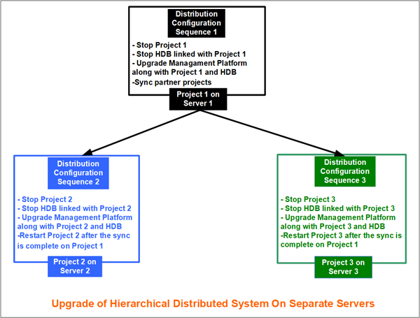
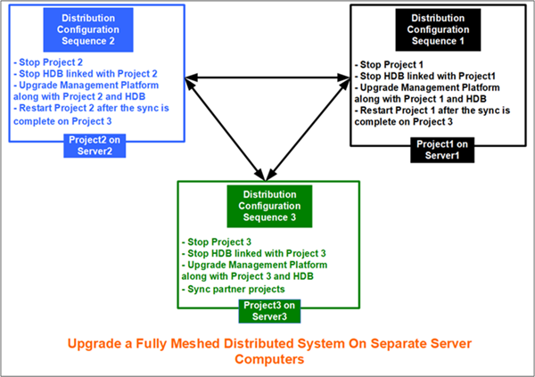

Upgrading the Systems in Distribution (Hierarchical and Fully Meshed)
Perform the following procedures to upgrade a hierarchical or fully meshed distributed system.
Upgrade the Hierarchical Distributed System on Separate Servers
Scenario
You want to upgrade an existing hierarchical distributed system deployed on 3 separate systems (for example, Server 1, 2 and 3) to the latest version.
Prerequisites
- You have taken a backup of the project and HDB before proceeding with the upgrade.
- Before upgrading the live system, you have conducted the upgrade on a different system and ensured that the upgrade is successful. After upgrade, you are able to access the partner systems and view the data on the partner systems as a global user.

During the project upgrade, the projects on multiple servers may not be visible to the Supervising system. Perform the following steps exactly in the given order.
- To upgrade Server 2, do the following:
a. From the Projects node, select the project and stop it. See Stop a Project in Server Projects Configuration Procedures.
b. (Optional) Stop the history database linked to the project. See Stop an HDB in Restoring and Upgrading the History Database.
c. Upgrade the management platform along with project and HDB and so on using either custom, semi-automatic, or silent installation mode along with the post installation steps. - The management platform along with the project, linked database, website, web applications are upgraded to the latest version. The logon dialog box displays and prompts you to provide password to logon.
- Repeat substeps of step 1 in the same order to remove project 3 from distribution and then upgrade it.
- Similarly, repeat the substeps of step 1 in the same order to remove project 1 for the Supervising system, Server 1 from the distribution and then upgrade it.
- Navigate to SMC on the supervising system, Server 1 and select project 1.
- In the Distribution Participants expander, click Sync to sync the partner projects with details on the originator projects.
- Navigate to the participating projects, Project 2 and Project 3 and restart these projects.
- The hierarchical distributed system is upgraded and back in distribution.
- Verify that the entire distributed system works as expected.
Testing the System after an upgrade
Perform the following activities to test that the upgrade to the distributed system is successful:
- View all the connected partner systems from the system on which you are logged in with global user.
- Verify that the drivers in the supervised and supervising systems are in correct state, networks are in connected state, and devices and points are also in connected state.
- Verify that applications such as trends, graphics and so on are loading and displaying correctly in their respective applications.
Upgrade Fully Meshed Distributed System on Separate Servers
Scenario
You want to upgrade an existing fully meshed distributed system deployed on 3 separate systems (for example, Server 1, 2 and 3) to the latest version.
Prerequisites
- You have taken a backup of the project and HDB before proceeding with the upgrade.
- Before upgrading the live system, you have conducted the upgrade on a different system and ensured that the upgrade is successful. After upgrade, you are able to access the partner systems and view the data on the partner systems as a global user.

During the project upgrade, the projects on multiple servers may not be visible to the other partner systems. Perform the following steps exactly in the given order.
- To upgrade Server 1, do the following:
a. From the Projects node, select the project and stop it. See Stop a Project in Server Projects Configuration Procedures.
b. (Optional) Stop the history database linked to the project. See Stop an HDB in Restoring and Upgrading the History Database.
c. Upgrade the management platform along with project and HDB and so on using either custom, semi-automatic, or silent installation mode along with the post installation steps. - The management platform along with the project, linked database, website, web applications are upgraded to the latest version. The logon dialog box displays and prompts you to provide password to logon.
- Repeat the substeps of Step 1 in the same order to remove project2 on Server2 from distribution and then upgrade it.
- Similarly, repeat the substeps of Step 1 in the same order to remove project3 on Server3 from the distribution and then upgrade it.
- Navigate to SMC on Server 3 and select project 3.
- In the Distribution Participants expander, click Sync to sync the partner projects with details on the originator projects.
- Navigate to Project 1 and Project 2 and restart them.
- The fully meshed distributed system is upgraded and back in distribution.
- Verify that the entire distributed system works as expected.
Testing the System after an upgrade
Perform the following activities to test that the upgrade to the distributed system is successful:
- View all the connected partner systems from the system on which you are logged in with global user.
- Verify that the drivers in the systems in distribution are in correct state, networks are in connected state, and devices and points are also in connected state.
- Verify that applications such as trends, graphics and so on are loading and displaying correctly in their respective applications.